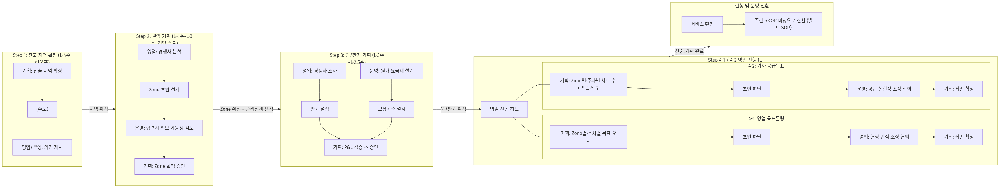
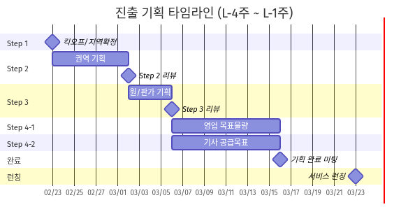

신규 지역 진출 운영 표준
신규 지역 진출 기획 SOP
발표자료
기준 문서: 신사업_운영_sop_ppt_요약본.md / 작성일: 2026.03.25
핵심 메시지
- 4주 내 진출 준비를 끝내는 단계형 운영 체계
- 기획 주도 하달 → 협의 → 확정의 반복으로 실행력 확보
- Step 4에서 수요/공급 병렬 운영으로 런칭 직전 정합성 확보
전체 흐름 요약

단계별 목표
- Step 1: 진출 지역 확정
- Step 2: Zone 구획 + 관리정책 생성
- Step 3: 원/판가 및 수익성 확정
- Step 4-1: 영업 목표물량 확정
- Step 4-2: 기사 공급목표 확정

Step 1: 진출 지역 확정 (L-4주)
프로세스
- 기획: 후보 중 진출 대상 지역 제시
- 영업/운영: 현장 관점 의견 제시
- 기획: 킥오프 미팅에서 최종 확정
조직별 활동 / 최종 산출물
- 기획: 진출 지역 확정(주도)
- 영업: 파이프라인 관점 의견
- 운영: 수급 가능성 관점 의견
최종 산출물: 진출 대상 지역 확정안 (킥오프 당일)
Step 2: 권역 기획 (L-4주~L-3주)
프로세스
- 영업: 경쟁사/상권 기반 Zone 초안 설계
- 운영: Capa/동선/협력사 가능성 검토
- 기획: 조율 후 Zone 확정 및 정책 생성
최종 산출물
- 권역 구획 맵
- Zone 목록표
- 인트라 관리정책(생성/저장)
확정 시점: L-3주 리뷰
Step 3: 원/판가 기획 (L-3주~L-2.5주)
프로세스
- 영업: 권역별 판가 초안 수립
- 운영: 기사 원가/보상기준 설계
- 기획: 정합성 + P&L 검증 후 승인
최종 산출물
- 권역별 원/판가표
- 수익성 시뮬레이션
- 인트라 원가/보상 설정
확정 시점: L-2.5주 리뷰
Step 4-1: 영업 목표물량 (L-2.5주~L-1주)
프로세스
- 기획: Zone별·주차별 목표 오더 초안 하달
- 영업: 현장/시장 기반 조정 의견 제시
- 기획: 협의 반영 후 최종 확정
최종 산출물
Zone별·주차별 영업 목표(오더)
확정 주체: 기획 초안 + 영업 협의 + 기획 확정
확정 시점: L-1주 이전
Step 4-2: 기사 공급목표 (L-2.5주~L-1주)
프로세스
- 기획: 세트 수/활성 프렌즈 초안 하달
- 운영: 공급 실현성 기준 조정 의견 제시
- 기획: 최종 확정 및 진출 기획 완료 선언
최종 산출물
- 세트 수 목표
- 활성 프렌즈 목표
- 벤더 계약 계획 / 프렌즈 확보 계획
- 인트라 세트분배 설정
단계별 최종 산출물 통합
| 단계 | 최종 산출물 | 최종 확정 주체 | 확정 시점 |
|---|---|---|---|
| Step 1 | 진출 대상 지역 확정안 | 기획 | L-4주 |
| Step 2 | Zone 맵/목록, 인트라 관리정책 | 영업 초안 + 운영 검토 + 기획 승인 | L-3주 |
| Step 3 | 원/판가표, 수익성 시뮬레이션, 원가/보상 설정 | 영업+운영 + 기획 승인 | L-2.5주 |
| Step 4-1 | Zone별·주차별 영업 목표 | 기획 초안 + 영업 협의 + 기획 확정 | L-1주 이전 |
| Step 4-2 | 세트/프렌즈 목표, 계약/확보 계획, 세트분배 설정 | 기획 초안 + 운영 협의 + 기획 확정 | L-1주 이전 |
조직간 협업 체계 ① (RACI)
| 의사결정 | 기획 | 영업 | 운영 | 비고 |
|---|---|---|---|---|
| 진출 지역 확정 | A | C | C | 킥오프 확정 |
| Zone 분할 설계 | A | R | C | 영업 주도 |
| 판가 설정 | A | R | C | - |
| 기사 원가 설정 | A | C | R | 운영 주도 |
| 영업 목표물량 | A/R | C | I | 기획 최종 확정 |
| 기사 공급목표 | A/R | I | C | 기획 최종 확정 |
조직간 협업 체계 ② (미팅/공유)
정기 미팅
- L-4주: 진출 기획 킥오프
- 매주: 주간 진행 점검
- 단계 전환: 단계별 리뷰
- L-1주: 진출 기획 완료 미팅
정보 공유 체계
- 기획 → 영업/운영: 지역 확정, 목표 초안, 확정 계획
- 영업 → 기획/운영: Zone 구획 맵
- 영업+운영 → 기획: 원/판가표
- 전 조직: 단계별 이슈 실시간 공유
9~11 압축 요약 & So What
압축 요약
- 타임라인: 킥오프 → Step2 리뷰 → Step3 리뷰 → 완료 미팅
- 리스크: Zone, 판가, 원가, 공급목표, 수급 실패
- 대응: 보수적 가정 + 주간 S&OP + 버퍼/대체 풀
So What
- 4주 내 진출 준비 완료를 반복 가능한 표준으로 고정
- 수요/공급 병렬 확정으로 런칭 직전 괴리 최소화
- 책임/미팅/정보공유 명확화로 실행 속도와 품질 동시 확보